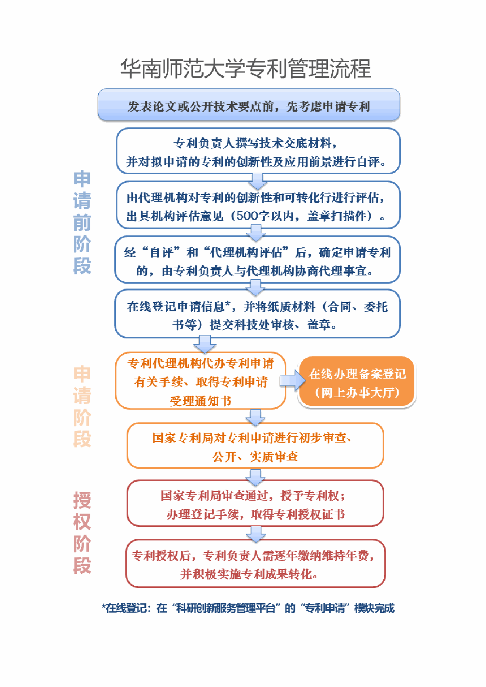

请假与考勤
线下请假条与线上出省报备两条线、天数与审批级别
请假分线下（纸质请假条）与线上（教学期间出省报备）两条线。教学期间出省都需要进行线上请假报备，这一条是硬性要求。按学院现行做法整理，线上网站旧说明不作为依据。
请假流程（线下 / 线上）#
请假分两条线，先看清自己属于哪种：
| 情形 | 走哪条线 | 本页位置 |
|---|---|---|
| 一般病假、事假（纸质请假条） | 线下请假 | 一、线下请假 |
| 教学期间出省 | 线上请假报备，必须办 | 二、线上请假 |
| 去校外实习、实践 | 校外学习实践审批 + 四方协议 | 「实习就业与毕业专区 → 实习申请与外出报备」 |
教学期间出省都需要进行线上请假报备，这一条是硬性要求；线上请假的具体操作目前先留空，见下方「二、线上请假」的待填写项。
一、线下请假（纸质请假条）#
本人先填表，按「导师 → 辅导员 → 盖章 → 任课老师」的顺序走完，最后把回执交回辅导员，才算办完。
办理流程#
一步一步来#
- 填表：下载下面的《请假条》，把请假时间、事由、课程都填清楚。
- 导师签字：先找导师签，再找辅导员——顺序不能反。
- 学院盖章：辅导员签完后到学院盖院章。
- 告知任课老师：把请假条拿给这学期的任课老师，说明缺课情况。
- 交回执：把请假条回执联交回辅导员备案。
相关文件内容#
- 请假条申请表（空表）
- 表上要填姓名、性别、学号、年级、院（所）、专业、导师、联系电话，以及请假原因和时间。
- 备注写清了审批权限：病假 2 周内、事假 1 周内由导师和学院研工办负责人同意；超过时限还要学院主管领导批准；一学期累计请假不能超过 1 个月。
- 直接打印手写即可，签完按上面的流程走。
几个要注意的地方#
- 导师签字要在辅导员之前，先找辅导员会被退回来。
- 想用导师电子签名章的，得先得到导师同意，并提供证明材料。
- 请假批准后，记得自己主动告诉任课老师，别等老师发现你缺课。
- 一学期累计请假不能超过 1 个月，超了要办休学手续。
- 天数与审批级别的对照，见「在校学习专区 → 请假与考勤」。
二、线上请假（教学期间出省报备）#
教学期间出省都要进行线上请假报备，不能只交纸质请假条。线上请假的入口、步骤和审批要求按学院现行做法执行，具体内容待填写。
线上请假的内容先留空：
【 】为待填写项，填完把括号删掉即可上线。
办理流程（待填写）#
需要你填写#
- 线上请假的系统 / 入口（网址、小程序或企业微信路径）：【待填写】
- 适用场景与判定口径（哪些情况算出省、教学期间怎么界定）：【待填写】
- 操作步骤（每一步点哪里、填什么）：【待填写】
- 要上传或提交的材料（行程、事由、证明等）：【待填写】
- 审批人与审批顺序：【待填写】
- 提前多久提交、审批时限：【待填写】
- 是否需要同时交纸质请假条 / 是否要销假：【待填写】
- 与「外出报备」如何区分、是否需要重复办理：【待填写】
- 违规未报备的处理说明：【待填写】
- 学院现行线上请假通知 / 操作截图（附件文件名与链接）：【待填写】
内容口径#
以上流程按学院现行做法整理。线上网站若还留着旧的请假说明、与本页不一致，以本页为准。
相关文件内容#
- 请假条申请表（空表）（线下请假用，见「一、线下请假」）
请假类型与天数规定#
请假分病假和事假两种，天数不同，审批的人也不同。记住一条：假越长，审批级别越高。
天数与审批对照#
| 请假类型 | 天数 | 谁来批 |
|---|---|---|
| 病假 | 两周以内 | 导师 + 学院研究生工作办公室负责人 |
| 病假 | 超过两周 | 上面两位 + 学院主管领导 |
| 事假 | 一周以内 | 导师 + 学院研究生工作办公室负责人 |
| 事假 | 超过一周 | 上面两位 + 学院主管领导 |
硬规定#
- 一学期累计请假不得超过 1 个月，超过就必须办休学手续。
- 请假获批准后，要主动把请假的事告诉相关任课老师。
- 请假条上的信息要如实填写，导师、辅导员的签字缺一不可。
什么时候用哪种#
- 生病需要治疗、休养 → 病假（医院证明要求：【待填写】）
- 家里有事、个人事务需要离校 → 事假
销假与考勤异常处理#
- 返校后是否要销假、找谁销假：【待填写】
- 考勤异常（缺课记录、系统未同步）怎么申诉：【待填写】
- 线上请假与纸质请假条是否需要同时提交：见上「请假流程（线下 / 线上）」中的待填写项。
选课与退课
选课、退课与补选的操作入口
本页按学院现行做法整理；线上网站若与本页不一致，以本页为准。
【 】为待填写项。
适用对象#
在读研究生；新生第一次选课见「新生专区 → 培养方案与选课」。
准备材料#
- 本专业培养方案（见「新生专区 → 培养方案与选课」）
- 导师确认的选课清单：【待填写】
平台操作步骤#
- 入口：教务信息服务平台 https://jwxt.scnu.edu.cn （查课表、成绩、选课）
- 课件与作业：砺儒云平台 https://moodle.scnu.edu.cn/
- 选课、退课、补选的时间节点与操作步骤：【待填写】
- 跨专业选课的申请与审批：【待填写】
- 学分认定与免修申请：【待填写】
常见卡点#
- 选课系统拥挤、名额已满时的处理：【待填写】
- 退课后学分不够、影响毕业审核：见「实习就业与毕业专区 → 毕业资格审核」。
找谁问#
研究生秘书（选课与学分）；导师（选课方向）
更新时间#
【待填写】
考试与成绩
缓考、补考与成绩复核
本页按学院现行做法整理；线上网站若与本页不一致，以本页为准。
【 】为待填写项。
适用对象#
在读研究生，涉及课程考核、缓考、补考、成绩复核与成绩单打印。
准备材料#
- 缓考 / 补考申请表：【待填写】
- 成绩复核申请表：【待填写】
平台操作步骤#
- 考试安排查询入口：【待填写】
- 缓考、补考申请步骤与截止时间：【待填写】
- 成绩复核申请步骤与结果反馈时限：【待填写】
- 成绩单打印（自助机 / 线上申请 / 盖章）：【待填写】
常见卡点#
- 缺考、违纪与成绩记载规则：【待填写】
- 成绩未录入影响奖学金评选与毕业审核：见「奖助专区 → 奖学金申请」「实习就业与毕业专区 → 毕业资格审核」。
找谁问#
研究生秘书（成绩与复核）；任课教师（课程考核）
更新时间#
【待填写】
学籍异动
休学、复学、转专业与保留学籍
本页按学院现行做法整理；线上网站若与本页不一致，以本页为准。
【 】为待填写项。
适用对象#
需办理休学、复学、转专业、保留学籍（含入伍、交换）的研究生。
准备材料#
- 学籍异动申请表：【待填写】
- 证明材料（病历、入伍通知、交换录取等）：【待填写】
- 导师与学院意见：【待填写】
平台操作步骤#
- 申请入口（研究生管理信息系统 / 综合服务平台）：【待填写】
- 审批顺序与办理时限：【待填写】
- 复学、恢复学籍的手续：【待填写】
常见卡点#
- 一学期累计请假超过 1 个月须办休学，见「在校学习专区 → 请假与考勤」。
- 休学期间奖助、宿舍、学籍年限怎么处理：【待填写】
- 异动后选课与学分认定：【待填写】
找谁问#
研究生秘书（学籍）；研工办（审批、备案）
更新时间#
【待填写】
毕业设计
开题、中期检查、查重与答辩的培养环节
本页讲培养过程：选题、开题、中期、查重、答辩。出口阶段的学位申请、论文送审与学位材料见「实习就业与毕业专区 → 学位申请与论文送审」，两页不重复内容。按学院现行做法整理。
适用对象#
进入学位论文阶段的研究生。
准备材料#
- 开题报告、文献综述：【待填写】
- 中期检查表：【待填写】
- 学位论文定稿（格式按学院模板）：【待填写】
平台操作步骤#
| 环节 | 要点 | 本院具体要求 |
|---|---|---|
| 选题 | 与导师商定，符合专业方向 | 【待填写】 |
| 开题 | 开题报告上传系统、专家组评审 | 【待填写】 |
| 中期检查 | 进度汇报与考核 | 【待填写】 |
| 查重 | 送审前必须达标，重复率原则上不超过 20% | 学院指定系统与要求：【待填写】 |
| 答辩 | 送审通过后由学院统一安排 | 见「实习就业与毕业专区 → 学位申请与论文送审」 |
常见卡点#
- 开题报告未上传，毕业资格审核过不了。
- 论文格式（尤其参考文献）不符被退回修改。
- 先发表论文或公开技术要点会丧失专利新颖性，见「在校学习专区 → 专利与软著申请」。
找谁问#
导师（论文全过程）；研究生秘书（开题、中期、答辩材料）
更新时间#
【待填写】
学术资源使用
学术资源访问申请与校外访问方法
学校提供学术论文、科技搜索等科研学术网站的专项访问服务（校内有专属通道，不用自己想办法）。要用先申请，申请通过后按下面的方法访问。
怎么申请#
- 入口：师生服务中心 https://service.scnu.edu.cn/ →「学术资源访问申请」
- 本科生、研究生申请：辅导员审批 → 所在学院审批
- 教职工申请：所在学院领导审批
- 申请通过后，次日起就能用
怎么访问#
- 用本人的校园网账号（就是一卡通卡号）连接校园网。
- 打开 https://scholar.edu.cn/ ，在页面上方「浏览器及工具下载」下载并安装对应型号的 Open 浏览器。
- 装好后打开 Open 浏览器，再访问 https://scholar.edu.cn/ ，点相应链接就能进入学术资源网站。必须通过 Open 浏览器访问，普通浏览器打不开。
- 要用 git 的话，参考页面「学术工具」里的说明。
- 使用中遇到问题，在首页「需求及问题反馈」栏填写建议。
几条红线#
- 严禁翻墙——校园网翻墙属违规，学术资源走学校提供的正规通道。
- 账号不外借——学术资源访问权严禁转让、出借，违规会被取消使用权限。
- 使用时不能发布违法、扰乱社会稳定、影响学校声誉的信息。
校园网账号#
- 无线网信号 SCNUNET，教学楼、办公楼、图书馆、宿舍都有覆盖。
- 账号是学号，初始密码身份证后八位（字母大写）。
- 一个账号最多同时登录 3 台设备。
相关文件内容#
- 附件1 华南师范大学学术资源服务使用手册
- 写怎么申请：师生服务中心 →「学术资源访问申请」，本科生/研究生由辅导员和学院审批，教职工由学院领导审批。
- 写怎么访问：审批通过次日起，用一卡通账号连校园网，打开 https://scholar.edu.cn/ 下载安装 Open 浏览器，再用这个浏览器访问学术资源网站。
- 还提到 git 等学术工具的使用说明，以及首页「需求及问题反馈」的用法。
- 附件2 学术资源服务管理办法（试行）
- 总则部分说明学术资源服务是什么、为什么要管、谁来负责；原则是「谁使用谁负责，谁主管谁负责」。
- 开通流程部分写学校怎么获得权限、校内用户怎么申请、人员变动怎么更新或撤销权限。
- 安全与合规部分写账号仅限本人使用、不得转让出借，网络信息中心负责技术支持和访问日志留存。
相关链接#
- 师生服务中心（申请入口）：https://service.scnu.edu.cn/
- 学术资源访问：https://scholar.edu.cn/
- 公众号：华南师大图书馆（数据库资源、座位预约）；图书馆官网 http://lib.scnu.edu.cn/
- 网络信息中心：https://nc.scnu.edu.cn/
找谁问#
网络信息中心；图书馆
专利与软著申请
专利与软件著作权的申请入口与流程
有个重要原则：要发表论文或公开技术要点之前，先想清楚要不要申请专利。一旦公开，就丧失新颖性，专利可能申请不下来。
申请入口#
学校综合服务平台 https://sso.scnu.edu.cn → 科研创新服务管理平台 → 专利申请 / 软件著作权申请，可以在线查看和下载申请流程。
专利管理流程#

上图为学校专利管理的完整流程图，与本文放在同一个文件夹，可直接放到网站对应位置。
相关文件内容#
- 华南师范大学专利管理流程图
- 这张图把专利管理分成申请前、申请中、授权后三个阶段：申请前要写技术交底材料、代理机构出评估意见、在线登记并交科技处审核；申请中由代理机构办手续、取得受理通知书并走初审公开实审；授权后要办登记拿证书、逐年缴年费并推动成果转化。

三个阶段#
记住这几点#
- 顺序不能反：先申请专利，再发表论文或公开技术。
- 代理机构要出评估意见（500 字以内、盖章扫描件）。
- 拿到授权后要年年缴维持年费，不然专利会失效。
找谁问#
科技处；科研秘书；导师